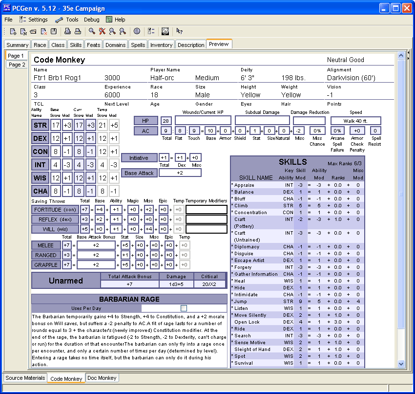
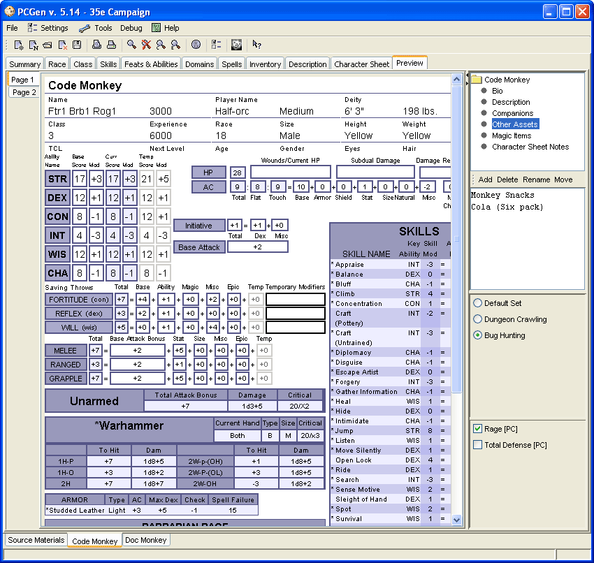
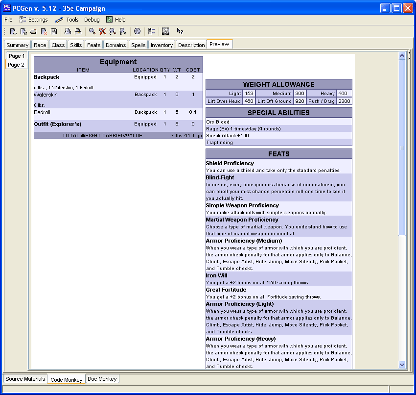
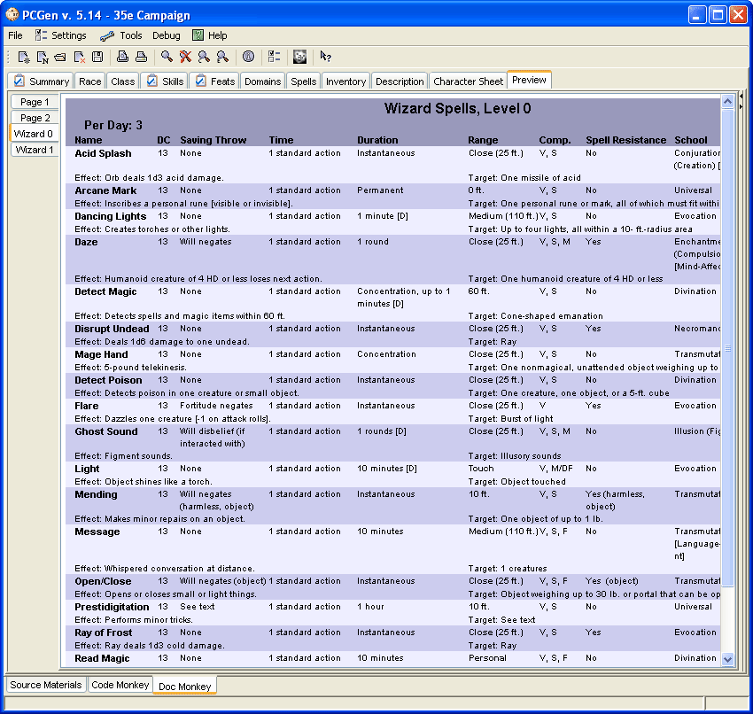

The Preview Tab displays all characters loaded in PCGen in a format similar to the output sheets PCGen exports to. Changes made to the character in PCGen are updated automatically in the Preview Tab at the time you make them. So, for example, if you were to apply the Rage bonuses from the Temporary Bonus Tab you would see these changes applied to your character when you returned to the Preview Tab.
The tabs on the left allow you to navigate through the pages of the character sheet. Page contains the primary information such as name, ability scores, skills, hit points, etc.. Page 2 contains additional information such as Feats and Special Abilities. If your character is a spellcaster there will be additional pages displaying your spells. If multiple characters are loaded the names of the characters will appear on tabs at the bottom of the character sheet allowing you to switch between characters.

The Preview Tab has an additional pane on the right which can be accessed by clicking the arrow along the vertical border of the window. This pane displays the character notes, the Equipsets and a list of temporary bonuses which have been applied to the PC. The radio button beside each Equipset indicates which Equipset is currently being applied to the PC and displayed in the Preview Tab. You can switch to another Equipset by simply clicking on the corresponding radio button. Each temporary bonus has a check box on it's left which indicate if it is active or not. Temporary bonuses can be switched off and on with the check box which will update the output of the Preview tab.


